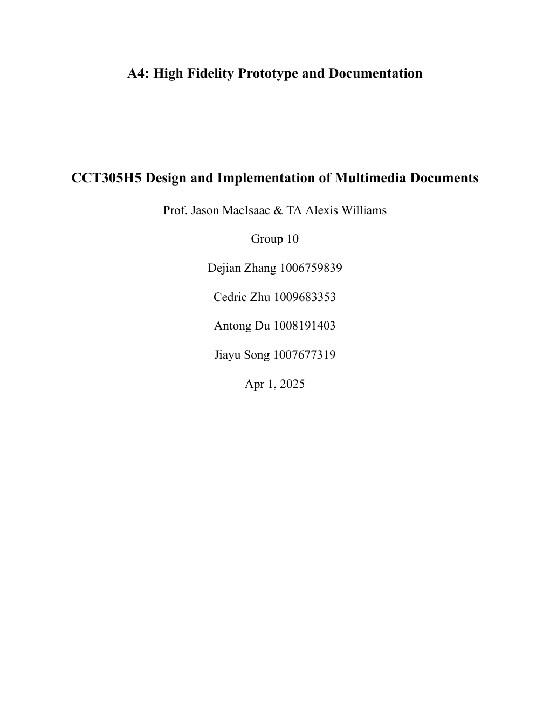
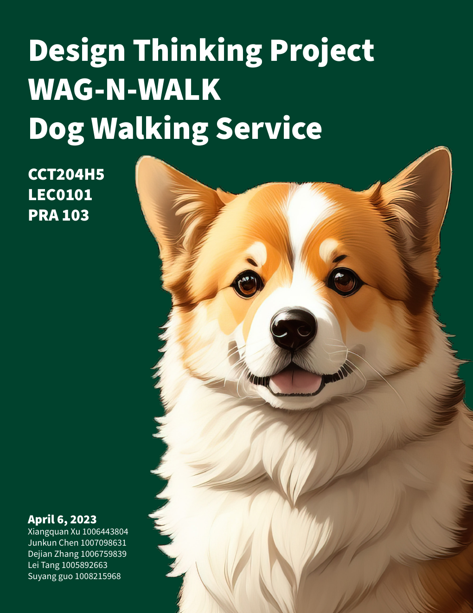

产品经理
我理解的产品经理不是只写文档，而是先把问题问清楚，再和设计、开发、运营一起确定下一步做什么，以及为什么先做它。
应届研究生 · 产品方向
我正在香港大学学习人工智能、伦理与社会。通过三段实习和几次课程项目，我接触了需求整理、界面设计、用户研究和内容运营，也逐渐明确了自己的产品方向。
目前希望寻找产品经理、产品设计或产品运营方向的应届岗位。


About Me
我是一名应届研究生，正在把实习和课程项目中学到的方法，逐步整理成自己的产品工作方式。
在 A.M. Footwear，我参与官网页面规划和界面重构，也做过竞品与市场数据整理；在船务公司，我设计网页模板并根据 TikTok 数据调整内容；在金属制品公司，我负责收集海外客户的需求和反馈。
这些经历让我发现，我喜欢先了解问题和使用场景，再整理信息、和不同角色沟通，最后做出一个可以继续讨论和改进的方案。
My Perspective
这些是我目前做项目时会坚持的基本想法，也会随着实际工作经验继续调整。
我理解的产品经理不是只写文档，而是先把问题问清楚，再和设计、开发、运营一起确定下一步做什么，以及为什么先做它。
界面好看很重要，但用户能不能顺利完成任务更重要。信息层级、操作反馈和异常状态，都是设计的一部分。
运营不只是发布内容。我更关注内容带来了什么反馈、用户为什么留下或离开，以及这些信息能不能反过来帮助产品改进。
Explore
每一部分都有独立页面，可以直接跳转，不需要一直向下滚动。